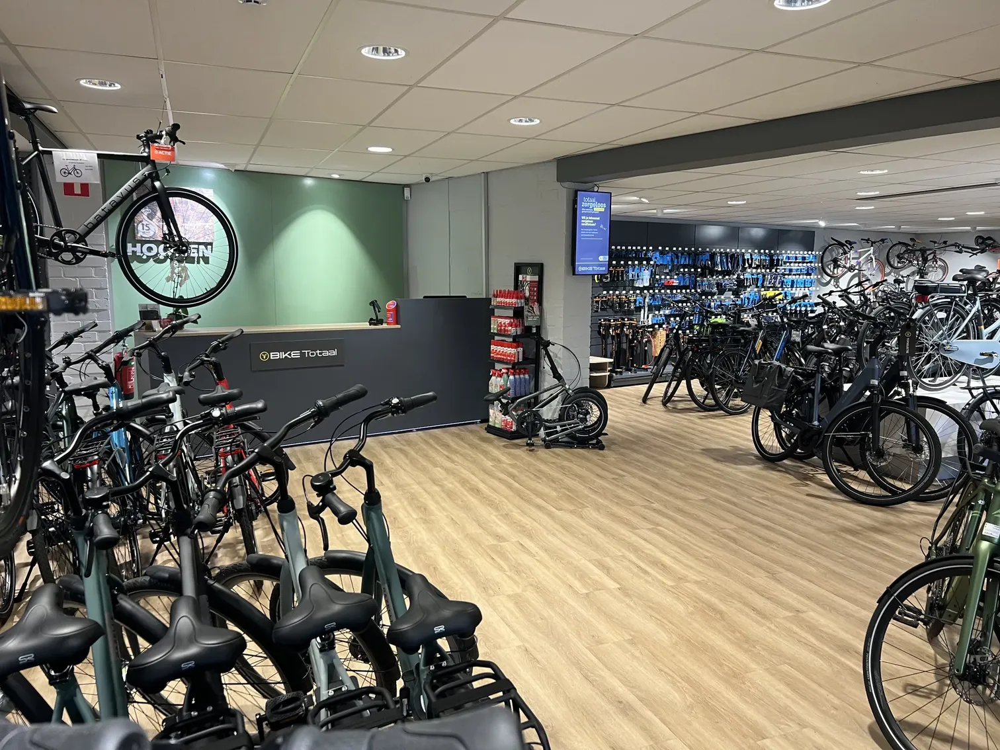
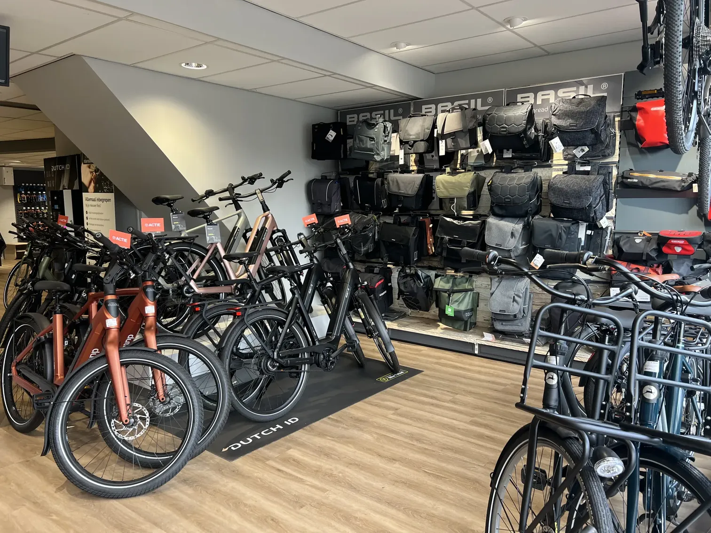
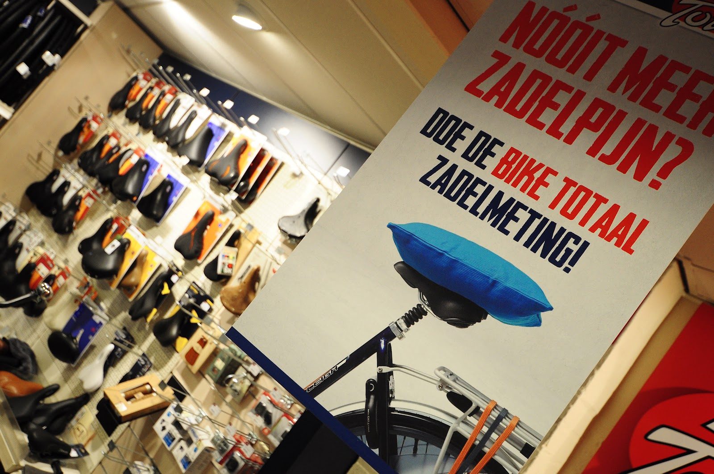
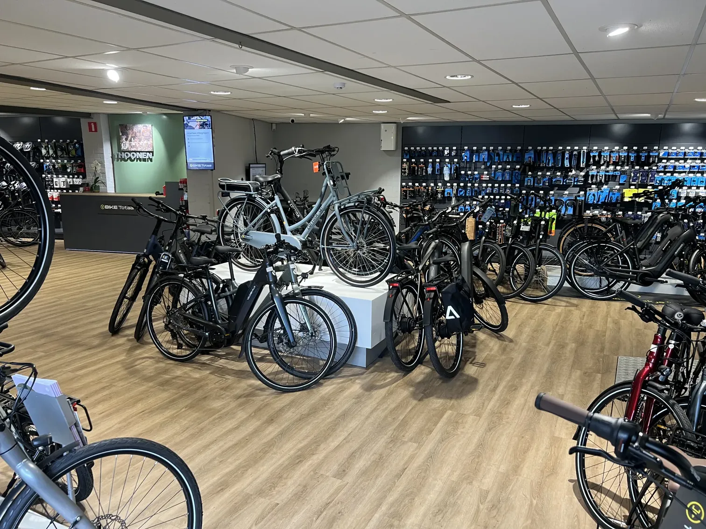
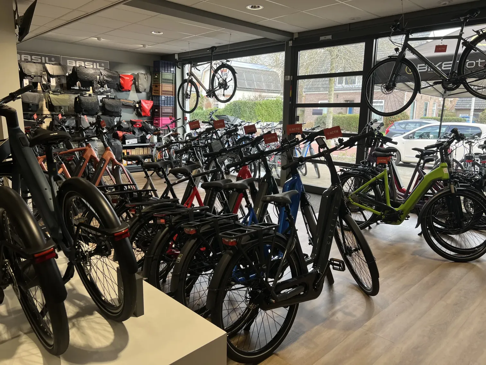
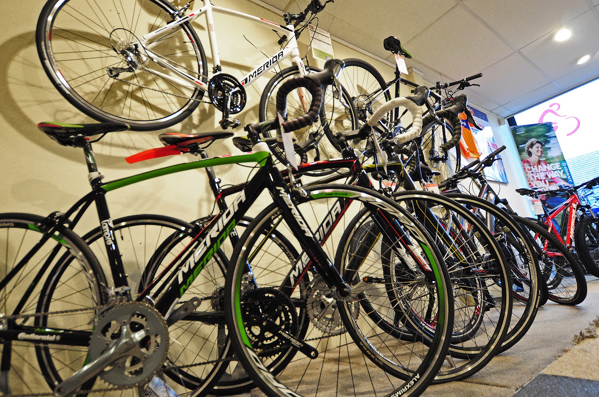
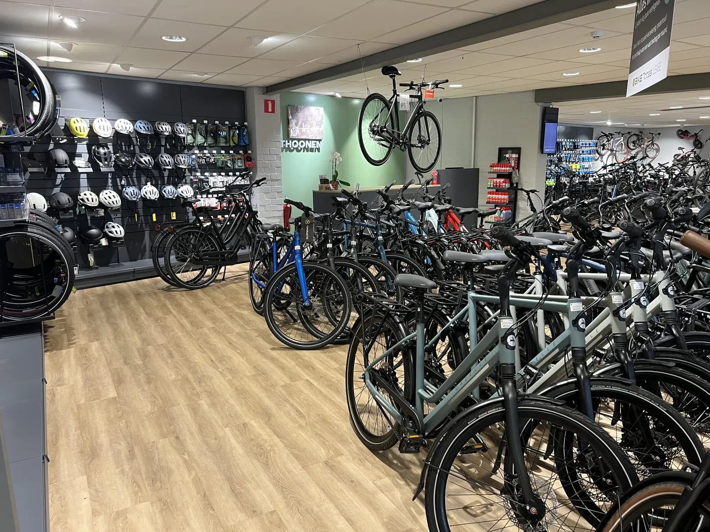
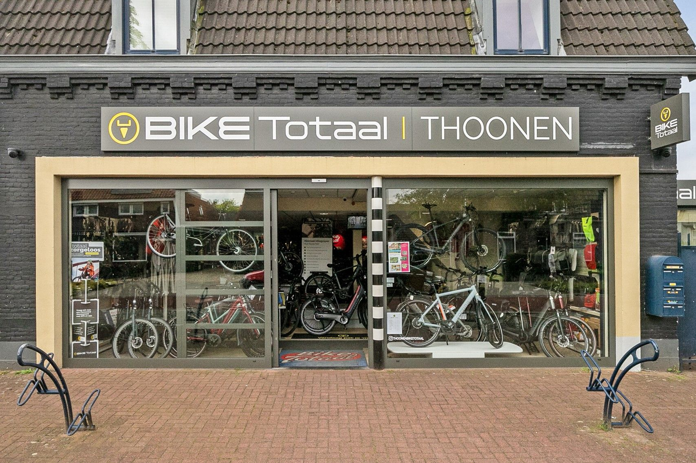

Fietsenwinkel aan de Dennenstraat, Nijmegen
Dé fietsenwinkel van Nijmegen. Met de werkplaats erachter.
Een nieuwe e-bike uitzoeken of je fiets snel weer rijklaar? We hebben niet alleen verstand van fietsen, we zijn er ook écht gek op.

Di t/m vr 9:00 tot 18:00
Zaterdag 9:00 tot 17:00. Zondag en maandag gesloten.
Dennenstraat 69, 6543 JP Nijmegen

Een fiets die bij je past. Eerst proberen, dan kiezen.
Of je nu op zoek bent naar een comfortabele e-bike, een trendy stadsfiets of een praktische transportfiets: in de winkel staat altijd een model dat bij je past. Kom langs, neem de tijd en maak een proefrit.
Gazelle, Cube, Cortina, Batavus, Dutch ID, Urban Arrow, Sparta en Merida
Bij een nieuwe fiets zit dit er standaard bij
- Rijklaar geleverd
- Montage van accessoires inbegrepen
- Eerste servicebeurt inbegrepen
- Korting op volgende servicebeurten
- Zadel- en fiets-omruilgarantie
- Vijf jaar dealergarantie op e-bikes
- Je oude fiets inruilen kan altijd
Standaard superservice van Bike Totaal, niet bij actieprijzen. Vraag in de winkel naar de voorwaarden.
Bel om een proefrit te plannenFiets kapot? Dan sta je niet lang stil.
Trapondersteuning die hapert, een versnelling die doorslaat of remmen die ineens niet meer werken: breng je fiets naar onze werkplaats. Door je fiets op tijd te laten maken voorkom je dure reparaties en blijf je veilig fietsen.
- Reparatie
- Gewone fiets of e-bike, van lekke band tot accu.
- Onderhoud
- Een servicebeurt houdt je fiets soepel en veilig.
- Vervangfiets
- Moet je fiets even blijven? Geef het door bij je afspraak, dan staat er een vervangfiets klaar.
- Zadelmeting
- Nooit meer zadelpijn: we meten welk zadel bij je past.

Wat klanten over ons vertellen
4.6 uit 146 reviews op Google
De heren van Bike Totaal Thoonen hebben vandaag binnen een paar uur een leen-accu voor me geregeld nadat deze gestolen was, en hebben daarnaast ook nog geassisteerd bij het doen van aangifte. Het team helpt en denkt actief mee bij het oplossen van uitdagingen, uitermate prettige service!
“Bart heeft alle tijd genomen om mij te adviseren over een goeie e-bike. En ook de afhandeling en uitleg was prima. Goede service. Hele mooie fiets gekocht. Fiets als een zonnetje.”
“Onderweg naar huis ging mijn zadel kapot. Kon direct terecht voor een snelle reparatie. Topservice!”
“Fijne en professionele fietswinkel in de buurt. Goed geholpen met de keuze van mijn nieuwe fiets. Tevens een oudere fiets van mij weer opgeknapt.”
“Ook al kom je vlak voor sluitingstijd en heb je zelf de batterijen uit de lampjes gehaald; dan doen ze er gewoon nieuwe batterijen in! Top service :-)”
“Kon meteen terecht met mijn fiets, waarvan de remmen ineens niet meer werkten. Kreeg een leenfiets en de volgende dag kon ik mijn fiets met weer werkende remmen ophalen. Fantastisch!”
“Veni: Ik kwam zonder afspraak, maar Bart nam toch alle tijd om me van goed advies te voorzien. Vidi: Ik zag een aantal leuke fietsen. Fietsi: Ik mocht op 3 fietsen een kort testrondje maken. De volgende dag kon ik de gekozen fiets al ophalen. Top service.”
Kijk alvast binnen
Volop fietsen op de vloer om te proberen, een wand vol accessoires en altijd iemand die even met je meekijkt.




Kom langs aan de Dennenstraat
Bike Totaal ThoonenDennenstraat 69
6543 JP Nijmegen Plan je route
Openingstijden
| Maandag | Gesloten |
| Dinsdag | 09:00 tot 18:00 |
| Woensdag | 09:00 tot 18:00 |
| Donderdag | 09:00 tot 18:00 |
| Vrijdag | 09:00 tot 18:00 |
| Zaterdag | 09:00 tot 17:00 |
| Zondag | Gesloten |
